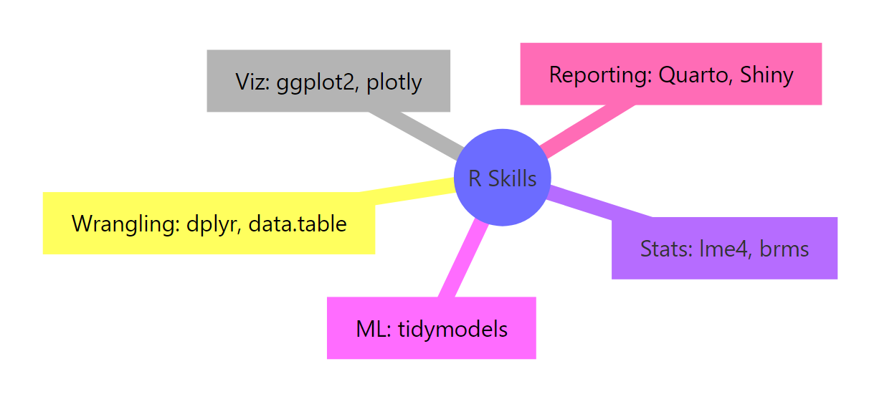
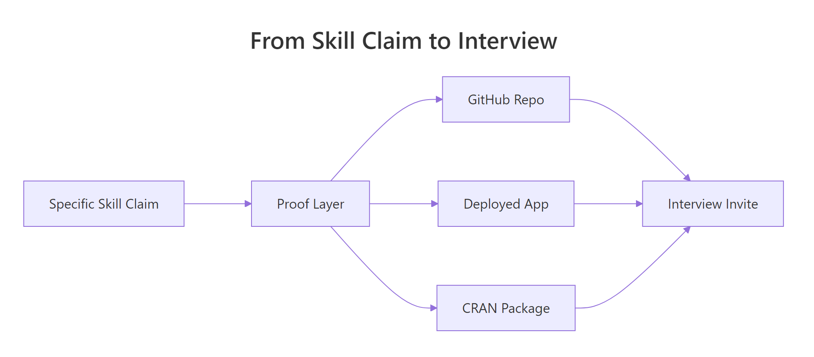

R Skills on Your Resume: What Actually Gets You Interviews
Recruiters scan for specific R packages, not the bare phrase "proficient in R". This guide shows you the exact R skill categories to list, the proof that turns claims into interviews, and the role-by-role tweaks that move your resume past ATS filters and onto a hiring manager's desk.
Why does "Proficient in R" fail to get you interviews?
Applicant tracking systems match resumes to job descriptions on exact strings. "Proficient in R" is a string almost no posting contains — postings ask for dplyr, ggplot2, Shiny, tidymodels. Hiring managers do the same on the human side: vague claims get skimmed, specific ones get questioned in interviews. The fix is a single-line rewrite. Run the block below to see the before-and-after on a real resume line.
RInteractive R
# A vague R skills line vs a specific, ATS-friendly one
vague <- "Proficient in R for data analysis."
specific <- paste(
"R (4 yrs):",
"data wrangling (dplyr, tidyr, data.table),",
"visualization (ggplot2, plotly),",
"modeling (tidymodels, lme4, brms),",
"reporting (Quarto, R Markdown, Shiny)."
)
cat("BEFORE\n", vague, "\n\nAFTER\n", specific, "\n", sep = "")
#> BEFORE
#> Proficient in R for data analysis.
#>
#> AFTER
#> R (4 yrs): data wrangling (dplyr, tidyr, data.table), visualization (ggplot2, plotly), modeling (tidymodels, lme4, brms), reporting (Quarto, R Markdown, Shiny).
The "AFTER" line is one sentence longer but contains nine package names, four skill categories, and a years-of-use signal. An ATS configured to match dplyr OR ggplot2 OR tidymodels lights up on the AFTER line and skips the BEFORE one entirely. A human reviewer scanning for two seconds gets a precise picture of what you can actually do.
Try it: Rewrite your own current "skills" line. Define your_vague and your_specific and print both with cat(). Aim for at least four package names in your_specific.
RInteractive R
# Try it: rewrite your own skills line
ex_vague <- "your current line here"
ex_specific <- "your rewritten line with 4+ R packages"
cat("BEFORE: ", ex_vague, "\nAFTER: ", ex_specific, "\n", sep = "")
#> Expected: a BEFORE line and a longer AFTER line with package names.
Explanation: Each language now carries 3-5 specific package names and an experience signal. ATS systems can match exact strings, and human reviewers see a concrete capability map.
Which R skill categories should you list on your resume?
Trying to list every R package you've ever used produces a wall of text that signals padding. The fix is to organize your skills into five buckets, then list 2-3 representative packages per bucket. The five buckets cover roughly 95% of what employers ask for.

Figure 1: The five R skill categories every resume should organize around.
Let's encode the taxonomy as a tibble so you can filter, sort, and reshape it for any role.
Each row carries three things you need on the resume: a category label a recruiter recognizes, the specific package keywords an ATS will match, and a ready-made resume_phrase that combines both. The resume_phrase column is what you actually paste into your skills section — short enough to scan, dense enough to score against a job description.
Tip
Pick 2-3 categories that match the target role and cap total packages at 12. Listing five categories with three packages each gives 15 keywords, which is the upper bound recruiters can mentally hold. More than that and the entire section reads as noise.
Try it:Filterskills_df to just the rows you'd keep for a "Visualization-heavy analyst" role.
RInteractive R
# Try it: filter skills_df for a viz-heavy analyst
ex_keep <- skills_df |>
filter(category %in% c(NA, NA)) # replace with the two best categories
ex_keep
#> Expected: a 2-row tibble.
Explanation: A viz-heavy analyst spends most of their time wrangling data into shape and then plotting it. Including Statistics or ML rows for that role would dilute the keyword density.
How do you prove each R skill claim?
A claim with no proof is treated like no claim at all. Every R skill on your resume should be backed by an artifact a hiring manager can click — a GitHub repo, a deployed app, a published package, a blog post. The figure below shows how a specific claim becomes an interview only when it carries a proof artifact.

Figure 2: A specific skill claim only becomes an interview when it carries a proof artifact.
Different proof types take different effort to produce and carry different signal. Let's rank them so you can decide where to invest.
RInteractive R
proof_df <- tribble(
~proof, ~time_cost, ~impact,
"GitHub repo (3-5 projects)", "Medium", "High",
"Deployed Shiny app", "High", "High",
"CRAN package", "Very High", "Very High",
"Open-source contributions", "Medium", "High",
"Technical blog posts", "Medium", "Medium-High",
"Conference talk", "High", "High",
"Certification", "Low", "Medium"
)
proof_df |>
arrange(desc(impact == "Very High"), desc(impact == "High"))
#> # A tibble: 7 × 3
#> proof time_cost impact
#> <chr> <chr> <chr>
#> 1 CRAN package Very High Very High
#> 2 GitHub repo (3-5 projects) Medium High
#> 3 Deployed Shiny app High High
#> 4 Open-source contributions Medium High
#> 5 Conference talk High High
#> 6 Technical blog posts Medium Medium-High
#> 7 Certification Low Medium
The arrangement reveals an obvious sweet spot. A GitHub repo of 3-5 polished projects sits at medium time cost and high impact — the best return on the hour you have. A CRAN package is the highest possible signal but takes weeks of work; a certification is the easiest win but the weakest signal on its own. Stack two or three medium-cost proofs and you outperform a single low-cost certification by a large margin.
Key Insight
One deployed Shiny app or CRAN package outweighs ten line items of vague claims. Hiring managers use proofs as a forcing function — they assume you can do whatever your portfolio actually demonstrates and discount everything else. Build one undeniable artifact before you polish your skill list.
Try it: Filter proof_df to just the rows where time_cost == "Medium".
RInteractive R
# Try it: medium-cost proofs only
ex_medium <- proof_df |>
filter(time_cost == NA) # replace NA with the right value
ex_medium
#> Expected: a 3-row tibble.
Click to reveal solution
RInteractive R
ex_medium <- proof_df |>
filter(time_cost == "Medium")
ex_medium
#> # A tibble: 3 × 3
#> proof time_cost impact
#> <chr> <chr> <chr>
#> 1 GitHub repo (3-5 projects) Medium High
#> 2 Open-source contributions Medium High
#> 3 Technical blog posts Medium Medium-High
Explanation: All three medium-cost proofs land at high or medium-high impact. If you have a weekend to invest, this is the row to start with.
Which R skills should you emphasize for each role?
The same R toolkit looks different on a Data Analyst resume than on an R Engineer resume. Tailoring matters because ATS filters are configured per posting — a single resume sent to four different roles will fail four different keyword tests. Encode the must-have map once and you can generate four tailored versions in seconds.
The single string returned by pull() is exactly what you'd paste into the skills section of a biostatistics-targeted resume. The same operation on "R engineer" returns a completely different package list — and that's the point. One source of truth, four output strings, zero copy-paste errors.
Warning
Listing every R package you've ever touched signals padding, not breadth. Senior reviewers know nobody is genuinely fluent in 30 packages. A list of 30 says you can't tell which 10 actually matter for the job, which is itself a disqualifying signal.
Try it: Pull the must_have string for the "Data analyst" role.
RInteractive R
# Try it: must-haves for Data analyst
ex_da <- roles_df |>
filter(role == NA) |> # replace NA
pull(must_have)
ex_da
#> Expected: "dplyr, ggplot2, R Markdown, SQL"
Explanation: The Data Analyst role is wrangling-and-reporting heavy, so SQL appears alongside the R packages. Tailoring means matching the role's actual day-to-day tools, not your full toolkit.
Which R resume mistakes silently kill applications?
Some mistakes lose you the interview without anyone telling you why — the resume just disappears. Knowing the top mistakes and their fixes is cheaper than figuring them out across six rejections. Encode them as a ranked table.
RInteractive R
mistakes_df <- tribble(
~mistake, ~severity, ~fix,
"Listing only 'R'", "High", "List 8-12 specific packages",
"Listing 30+ packages", "Medium", "Cap at 12; group by category",
"No years/context", "Medium", "Add 'R (4 yrs, daily use)'",
"RStudio listed as a language", "Low", "Move to Tools; keep R as the language",
"Claims without proof", "High", "Link GitHub or deployed app",
"Skills don't match the JD", "High", "Mirror the posting's exact terms"
)
mistakes_df |>
arrange(factor(severity, levels = c("High", "Medium", "Low")))
#> # A tibble: 6 × 3
#> mistake severity fix
#> <chr> <chr> <chr>
#> 1 Listing only 'R' High List 8-12 specific packages
#> 2 Claims without proof High Link GitHub or deployed app
#> 3 Skills don't match the JD High Mirror the posting's exact terms
#> 4 Listing 30+ packages Medium Cap at 12; group by category
#> 5 No years/context Medium Add 'R (4 yrs, daily use)'
#> 6 RStudio listed as a language Low Move to Tools; keep R as the language
The three High-severity mistakes share a single root cause: missing specificity. The fixes are all one-line edits. Spend ten minutes on the High rows and you'll clear the most common ATS and reviewer-skim filters in one pass.
Note
"RStudio" listed as a programming language is a small mistake that flags a self-taught ceiling. It signals you've never had a code review from a senior R developer who would have caught it. Move RStudio to a "Tools" subsection and keep R itself in "Languages".
Try it: Use count() to count mistakes by severity.
RInteractive R
# Try it: count by severity
ex_counts <- mistakes_df |>
count(severity) # add an arrange() if you like
ex_counts
#> Expected: a 3-row tibble with High=3, Medium=2, Low=1.
Click to reveal solution
RInteractive R
ex_counts <- mistakes_df |>
count(severity) |>
arrange(desc(n))
ex_counts
#> # A tibble: 3 × 2
#> severity n
#> <chr> <int>
#> 1 High 3
#> 2 Medium 2
#> 3 Low 1
Explanation: Half the most common mistakes are High severity — a reminder that the small mistakes are not what's killing applications. The vague-skills problem is.
Practice Exercises
These exercises combine multiple ideas from the tutorial. Each one builds something you can paste into a real resume.
Exercise 1: Generate a tailored skills line in one function
Write a function tailor_skills(df, keep) that takes skills_df and a character vector of categories to keep, and returns a single string of the matching resume_phrase values joined by "; ". Call it with c("Wrangling", "Visualization", "Reporting & apps").
RInteractive R
# Exercise 1: write tailor_skills()
# Hint: filter() then pull() then paste(..., collapse = "; ")
tailor_skills <- function(df, keep) {
# your code here
}
# Test:
# tailor_skills(skills_df, c("Wrangling", "Visualization", "Reporting & apps"))
Explanation:filter() keeps the selected categories, pull() extracts the resume_phrase column as a character vector, and paste(..., collapse = "; ") joins them into one resume-ready line.
Exercise 2: Build a complete TECHNICAL SKILLS block from input vectors
Use glue() (or paste()) to build a four-line TECHNICAL SKILLS block from these inputs: languages = c("R (4 yrs)", "Python (2 yrs)", "SQL (3 yrs)"), r_packages = c("tidyverse", "ggplot2", "Shiny", "tidymodels", "data.table"), tools = c("RStudio", "Git", "Docker", "PostgreSQL"), methods = c("regression", "mixed models", "A/B testing"). Output should look like the format below — each line aligned by label.
Explanation:glue() with .sep = "\n" joins multiple template strings with newlines, and paste(..., collapse = ", ") flattens each input vector into a single comma-separated string. Updating any vector regenerates the whole block.
Exercise 3: Score your portfolio readiness against a target role
Add an owned column (TRUE/FALSE) to proof_df, attach an integer weight per impact level (Very High = 5, High = 3, Medium-High = 2, Medium = 1), then compute a 0-100 readiness score: 100 * sum(weight * owned) / sum(weight).
Explanation: Weighting by impact lets a single CRAN package contribute more than three certifications. The score gives you a one-number signal of where to invest your next portfolio hour — anything under 50 means start with a GitHub repo or a deployed Shiny app.
Complete Example: Building a tailored R skills section in code
Tying it all together: take your personal skill inventory, filter to the must-haves for one target role, format with glue(), and emit a complete resume-ready block. The same pipeline produces a different output for any role — change one line and rebuild.
That output drops straight into a resume's R Programming subsection. To re-target the same source data for an R Engineer role, swap ds_categories for a different vector and re-run. The skill list stays in one tibble; the formatted output regenerates from data each time, so a typo fix touches one cell instead of three resume files.
Tip
Generate the resume block from data, then paste — that way edits stay one-file changes. Most "I have three slightly different resumes" pain comes from copy-pasted text drifting out of sync. A short R script kills the drift problem permanently.
Summary
Specificity beats fluency claims. ATS filters and human reviewers both want package names, not "proficient in R".
Five categories, twelve packages. Wrangling, Visualization, Statistics, Machine learning, and Reporting & apps cover ~95% of postings. Cap total packages at 12.
Every claim needs a proof artifact. GitHub repos sit at the medium-cost / high-impact sweet spot; one deployed Shiny app outweighs ten certifications.
Tailor per role. Data Analyst, Biostatistician, Data Scientist, and R Engineer postings filter on different keyword sets — encode the role map once and regenerate.
The three high-severity mistakes are all specificity failures. Listing only "R", claims without proof, and skills that don't match the JD are the silent killers.
Generate from data, not templates. A 20-line R script produces a tailored skills block per role with zero copy-paste drift.
References
Wickham, H. & Çetinkaya-Rundel, M. — R for Data Science, 2nd ed. (2023). Link
CRAN Task Views — curated package categories by topic. Link